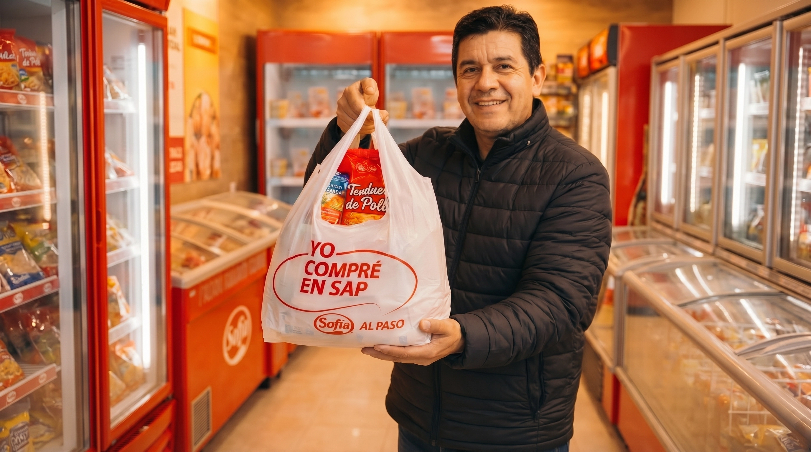
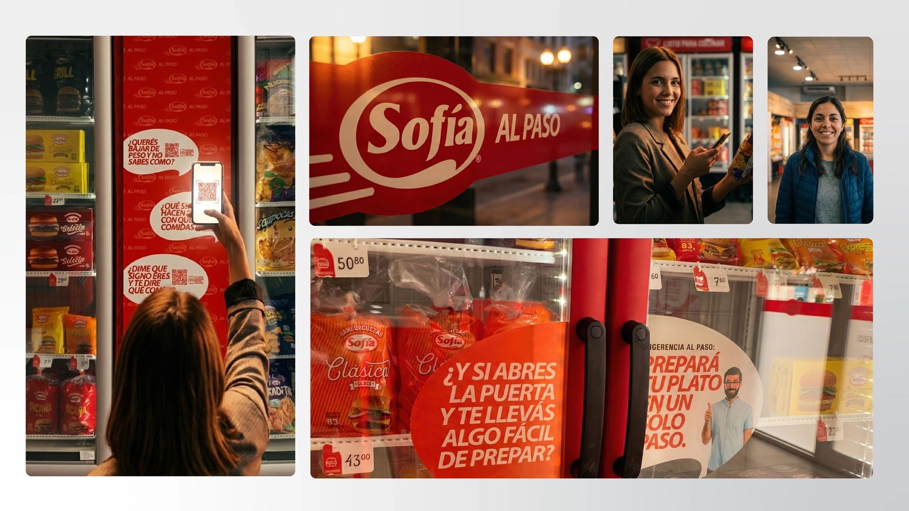

Cuando el crecimiento supera la identidad
Strategy must lead
Sofía es una de las marcas de alimentos más reconocidas de Bolivia, con fuerte presencia en distribución y retail a nivel nacional. Sin embargo, la rápida expansión y la evolución del mercado crearon una brecha entre la percepción de marca y la ambición del negocio.
Este proyecto se centró en diseñar un modelo de transformación de marca escalable, alineando la experiencia retail, la comunicación y la identidad visual bajo un sistema estratégico cohesivo.


Una marca poderosa sin experiencia unificada
Alignment, not recognition
Sofía tenía un fuerte reconocimiento de marca, pero su ejecución retail carecía de consistencia en todos los puntos de contacto:
- Los layouts de tienda variaban significativamente
- La aplicación de identidad visual era inconsistente
- El tono de comunicación cambiaba según el canal
- La experiencia en tienda no expresaba liderazgo de marca
El desafío no era el reconocimiento. Era la alineación.

"Convertir el poder de distribución en poder de experiencia de marca." Objetivo estratégico — Sofía al Paso
Estrategia primero.
Diseño como ejecución.
Structured phases · Business-anchored decisions
La transformación se estructuró en fases, donde cada decisión estuvo anclada en lógica de negocio, no solo en estética:
- Claridad y refinamiento de posicionamiento de marca
- Mapeo de la experiencia retail
- Expansión del sistema de identidad visual
- Estandarización del diseño de tiendas
- Framework de consistencia en comunicación
El objetivo del proyecto era claro: construir un modelo de transformación escalable que elevara la percepción sin perder accesibilidad y creara un sistema adaptable al crecimiento futuro.
Esto requirió más que un rebranding. Requirió un framework operativo estratégico.
- Modelo de transformación escalable
- Identidad retail estandarizada en todos los formatos
- Percepción elevada sin perder accesibilidad
- Sistema adaptable al crecimiento futuro
Una marca se construye donde los clientes interactúan
Store design · Signage · Flow
El entorno retail se convirtió en el foco central. Rediseñamos cada punto de contacto físico para crear una experiencia de compra consistente, moderna y eficiente que refuerza la confianza en la marca.
- Señalética exterior y sistemas de identidad
- Layouts interiores para flujo y claridad
- Jerarquía de color para visibilidad
- Sistemas de exhibición de producto
- Mensajería en punto de venta

La consistencia construye credibilidad
Typography · Color · Signage · Templates
La identidad visual fue refinada y sistematizada para garantizar: aplicación correcta del logo, jerarquía tipográfica escalable, uso controlado de la paleta de color, sistemas de señalización claros y plantillas promocionales para campañas.
Lo que antes se sentía fragmentado se convirtió en algo estructurado y replicable.

Si no puede escalar, no es estrategia
Brand manuals · Guidelines · Checklists
Un enfoque central del proyecto fue la claridad operacional. Desarrollamos herramientas para que las nuevas tiendas pudieran replicar la experiencia sin perder coherencia:
- Manuales de marca
- Lineamientos de implementación retail
- Checklists de ejecución
- Sistemas de diseño de tiendas modulares
La marca pasó de una ejecución reactiva a una expansión estructurada. Implementación más eficiente de nuevas tiendas y comunicación más clara entre marketing y operaciones.
Una transformación de esta escala requiere liderazgo estratégico
Cross-functional coordination across divisions